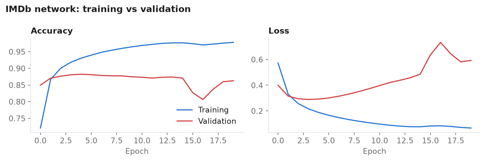
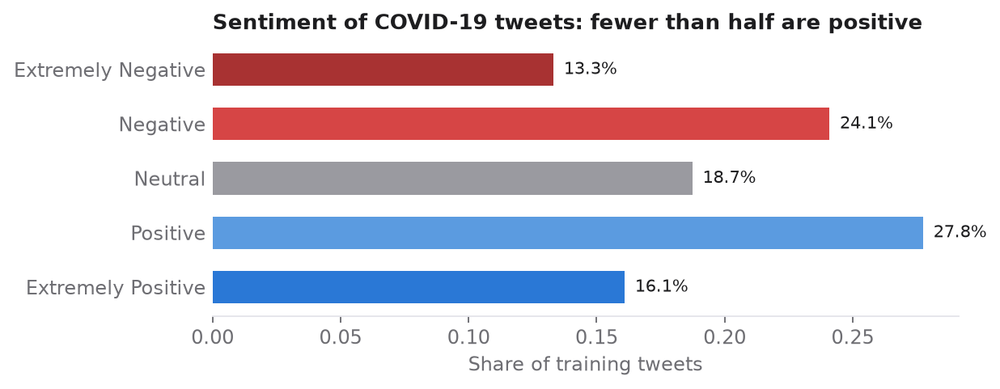
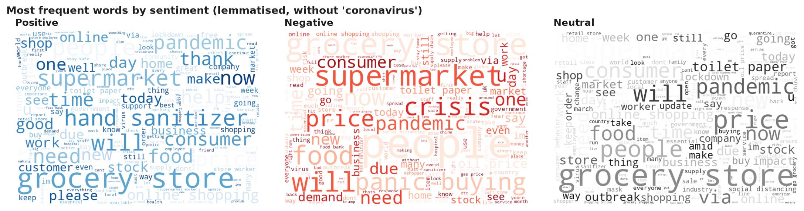
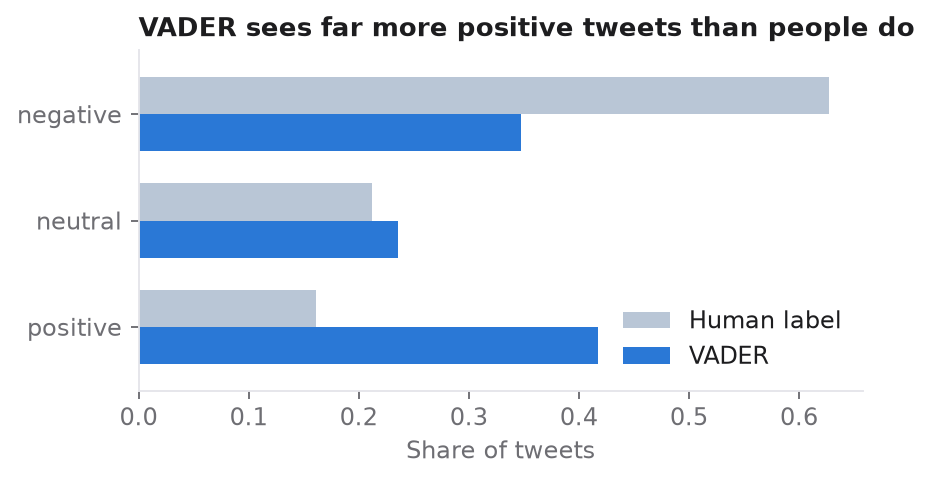

Why three studies?
Sentiment analysis can be done with very different tools, from a fixed dictionary of positive and negative words to neural networks that learn from labelled examples. I wanted to see how each behaves on real data before using them in larger projects. Each study asks a different question: can a small network learn a simple two-class task, does word order help when there are five classes, and how far does a dictionary get without any training?
1. Movie reviews: a small network with word embeddings
The IMDb dataset contains 50,000 reviews labelled positive or negative. I kept the 10,000 most frequent words and padded every review to 256 tokens. An embedding layer learns a 16-number vector for each word, so that words used in similar reviews end up close together. A pooling layer averages them, and a small dense network with a sigmoid output decides between positive and negative. That is 160,289 parameters in all.

On the 25,000 unseen test reviews the model is right 84.9 % of the time, equally well on positive and negative reviews. A network this small is clearly enough for a simple binary task.
2. COVID-19 tweets: does word order help?
The second dataset holds 41,157 training and 3,798 test tweets from March 2020, labelled in five classes from extremely negative to extremely positive. Fewer than half of the tweets are positive.

Before modelling, I removed URLs, user handles, hashtags, punctuation, numbers and stop words, and reduced the words to their dictionary form (WordNet lemmatisation). The vocabulary of positive and negative tweets already tells the story of the first lockdown:

I compared two networks on the same 128-dimensional word embedding. A dense network averages the words and ignores their order. An LSTM reads the tweet word by word and can therefore pick up negation (not good) and intensity (really bad). Both were trained on 70 % of the labelled tweets with early stopping, and then tested on the separate test set.
| Model | Parameters | Test accuracy, 5 classes | 3 classes |
|---|---|---|---|
| Dense network | 1.28 M | 65.1 % | 79.3 % |
| LSTM | 2.76 M | 68.5 % | 82.1 % |

The LSTM wins by about 3.5 points on unseen tweets, so word order helps when the task has finer sentiment levels. Both models start to overfit after one or two epochs, which is why early stopping matters. One more lesson came from the location field: India has 268 tweets, but Hungary only 3. The dataset says nothing about Hungarian sentiment, however tempting the comparison.
3. Airline tweets: a dictionary without training
VADER is a sentiment lexicon built for social media. It gives each word a score between −4 and +4 and adjusts for negation, intensifiers, capital letters and emoticons. It needs no training data at all. On 14,640 tweets about US airlines, it agrees with the human labels only 54.3 % of the time.

Customers often complain politely. Thanks and please carry positive scores even in a frustrated tweet, so many complaints end up classed as positive. A dictionary is fast and transparent, but it cannot learn the language of a specific domain.
Conclusions
A small embedding network handles a clear binary task well (85 %). With five sentiment levels, word order matters, and the LSTM beats the order-blind network on unseen data. A lexicon needs no data but misreads domain language. The natural next step was to test large language models on the same kind of task, which I did in the sentiment benchmark.
Correcting my own work. When I rebuilt these analyses from my original working notebooks, I found several bugs. Text cleaning had silently failed, labels were encoded twice, and the LSTM had been scored on its own training data. This had made the dense network look better. The results above come from the corrected, fully re-run code.